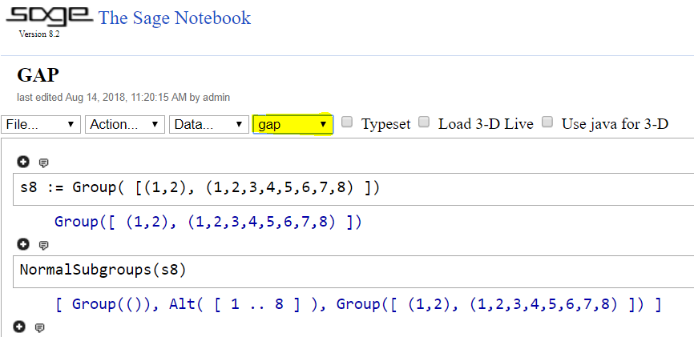
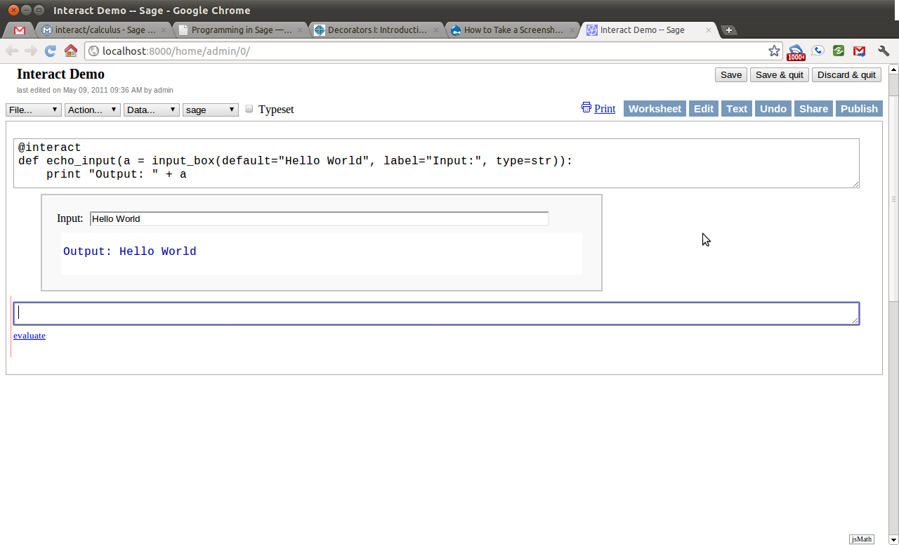
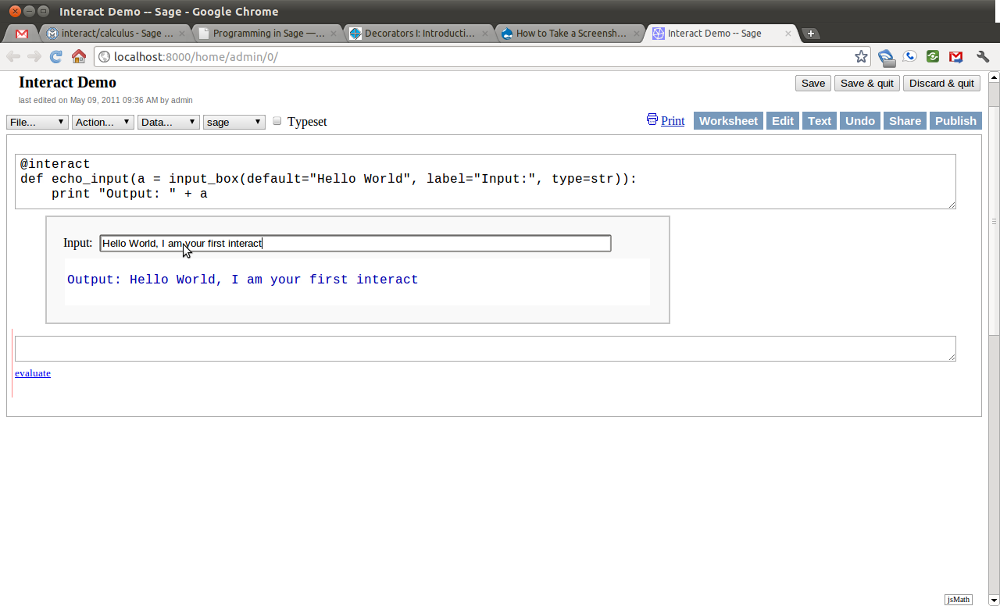
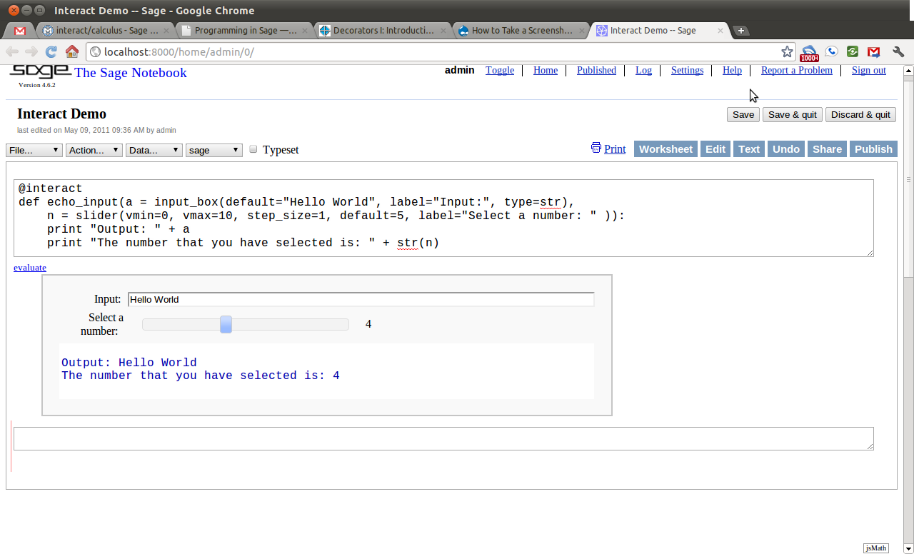

Programming in SageMath¶
This part of the tutorial covers the essential programming tools that you need to use in order to do more advanced mathematics. The first chapter, on SageMath objects, is essential before moving on to study mathematical structures. The second chapter is more specifically about programming: conditionals and iterative loops, creating your own commands and saving your work. It is not necessary for basic computations with mathematical structures, but becomes invaluable for doing in-depth work. The third chapter explains how to interact with some of the main mathematical software packages included in SageMath. Finally there is a brief chapter on interactive use of SageMath.
SageMath Objects¶
Universes and Coercion¶
A key concept in SageMath is the universe of an object. The most effective way to gain a familiarity with universes and the related concept, coercion, is to see a few examples. We begin with the most common universes: the integers, and the rational, real and complex numbers.
In SageMath, ZZ indicates the universe where the Integers live, while``QQ``, RR and CC indicate the universes of the Rationals, Real and Complex numbers, respectively.
sage: ZZ
Integer Ring
sage: QQ
Rational Field
sage: RR
Real Field with 53 bits of precision
sage: CC
Complex Field with 53 bits of precision
We can check if a given objects live in a universe using the in operator.
sage: 1 in ZZ
True
sage: 1/2 in ZZ
False
sage: 1/2 in QQ
True
sage: sqrt(2) in QQ
False
sage: sqrt(2) in RR
True
The letter I in SageMath is the square root of -1 (i also works).
sage: i^2
-1
sage: i^3
-I
sage: I in RR
False
sage: I in CC
True
To directly check which universe a number is in, we use the parent() function.
SageMath will choose the simplest universe for each number.
sage: parent(1)
Integer Ring
sage: parent(1/2)
Rational Field
sage: parent(5.7)
Real Field with 53 bits of precision
sage: parent(pi.n())
Real Field with 53 bits of precision
Another important universe is the Symbolic Ring. You might think that \sqrt{2} or \pi would have parent RR, the real numbers, while I would be in CC. But RR and CC have finite precision, and these numbers satisfy formulas that make them special, for example \sqrt{2}^2=2 and \sin(\pi)= 0. SageMath stores these numbers with special properties in the so-called Symbolic Ring, whose variables are aptly-named symbolic variables, see “Variables”.
sage: parent(sqrt(2))
Symbolic Ring
sage: parent(I)
Symbolic Ring
sage: parent(pi)
Symbolic Ring
We often perform operations with elements from different universes as long as there is some sort of natural conversion that can be done to both elements so that they live in the same universe. For instance, when we compute 1 + 1/2 = 3/2, we implicitly convert 1 from the Integer universe to the universe of rational numbers, before performing the operation. This conversion is often so natural that we don’t even think about it and, luckily for you, SageMath does many of these conversions without you having to worry about them either.
sage: parent(1 + 2)
Integer Ring
sage: parent(1/2 + 2)
Rational Field
sage: parent(1/2 + 2.0)
Real Field with 53 bits of precision
SageMath’s treatment of symbolic constants like pi is worth-mentioning in its own right. For example, here’s what happens when we mix pi with a decimal.
sage: exp(1.)*pi
2.71828182845905*pi
sage: parent(exp(1.)*pi)
Symbolic Ring
SageMath will always choose the universe which offers the most precision, and the same will be true for other symbolic constants like e and i, as well for the polynomial indeterminate x.
sage: parent(2 + i)
Symbolic Ring
sage: parent(2 + x)
Symbolic Ring
sage: parent(2 + 2.0*x)
Symbolic Ring
sage: parent(2*pi + 2.0*e)
Symbolic Ring
What if we want to convert a number from a universe to another? Luckily, we can easily accomplish that through a process called coercion. We coerce a number into another universe, if it makes sense, by applying the parent structure to the object like it was a function. For example:
sage: QQ(.5)
1/2
sage: parent(QQ(.5))
Rational Field
sage: RR(sqrt(2))
1.41421356237310
sage: parent(RR(sqrt(2)))
Real Field with 53 bits of precision
And in case we try to make some nonsensical conversions, SageMath will raise a TypeError.
sage: QQ(i)
ERROR: An unexpected error occurred while tokenizing input
The following traceback may be corrupted or invalid
The error message is: ('EOF in multi-line statement', (1170, 0))
---------------------------------------------------------------------------
TypeError Traceback (most recent call last)
... * a lot of noise *
TypeError: Unable to coerce I to a rational
Exercises:
- What universe does
xlive in by default? When you declare a new variableywhere does it live?- Find the universe of the following expressions:
1 + 1/21 + 1/2.01/2 + ie + pie.n() + pie.n() + pi.()- For which of the following does the coercion make sense?
RR(1/2)QQ(1)ZZ(1/2)SR(1/2)(SR is the Symbolic Ring)CC(x)- If I enter
x=1/2into SageMath, what universe doesxlive in?
Booleans¶
Another important universe is the Booleans. The Boolean universe is just known as bool in SageMath, and it contains just two elements True and False.
sage: parent(True)
<type 'bool'>
There are several operations on Booleans (instead of the operations like +, * on numbers). We negate a Boolean by using the not operator.
sage: not True
False
sage: not False
True
We combine two Booleans with and and or. Suppose X and Y are Booleans.
- (X and Y) is True if both X and Y are True. If at least one of them is False, then it is False.
- (X or Y) is True if at least one of X or Y is True.
As demonstrated by the following example
sage: True and False
False
sage: True and True
True
sage: True or False
True
sage: False or False
False
We may use parentheses to control the order of evaluation of these truth statements.
sage: (True or False) and False
False
sage: True or (False and False)
True
In the first example (True or False) is evaluated to be True first, then True and False evaluates to be False. In the second example, (False and False) evaluates to be False, but True or False is True.
Another important operator on Booleans is the exclusive or operator, represented by ^^ in SageMath. (X ^^ Y) is True if exactly one of X or Y is True, and the other is False; otherwise it is False.
sage: True ^^ True # xor (exclusive or) operator
False
sage: True ^^ False
True
sage: False ^^ False
False
We check whether two whether two objects are equal using the == operator.
The result is a Boolean:
sage: 1 == 1
True
sage: 1 == 0
False
sage: not(True or False) == True and False
True
Please take note that we use two equals signs, not one! To check if two things are not equal, we have two options: The != operator and the <> operator.
sage: 1 != 1
False
sage: 1 != 0
True
sage: 1 <> 0
True
If two objects belong to a universe that has an ordering, < then we may ccomparing two elements of the universe gives a Boolean output.
Additionally we use >= for greater-than-or-equal-to and similarly <= for less-than-or-equal-to.
sage: 1 > 2
False
sage: 2 > 1
True
sage: 4.1 < 5.7
True
sage: 6 < 5
False
sage: 1 >= .99999
True
sage: 1 <= 35
True
Exercises:
- Test to see if the following expressions are
True,False, or not defined:
not (True or False) == (False and True)1 >= 11 + i >= 2 - i((3/2) > 1) or (2/3 < 1)((3/2) > 1) ^^ (2/3 < 1)x > 1/2- What is the parent of
x > 1/2? Why do you think that SageMath treats this expression differently from the rest?- Use SageMath to find out if e is greater than \pi? (Hint: Remember that both ``e`` and ``pi`` are symbolic variables by default.)
Variables¶
You should be familiar with “Declaring Variables”
The term ‘variable’, can hold different meanings. For instance, in computer programming, a ‘variable’ is a space in memory used to store and retrieve a certain piece of information. In mathematics, a variable such as x is a quantity with indeterminate value: a symbol that we can manipulate with the same rules of arithmetic that are applied to numbers.
In SageMath, both usages are present. We will use the term variable for the computer programming variable and symbolic variable for the mathematical variable.
SageMath initializes the Symbolic Ring to have one symbolic variable, x. It obeys the arithmetical rules that we expect.
sage: 3*x - x
2*x
sage: e*e^x
e^(x + 1)
If we need another symbolic variable, we have to declare it, using the var() command.
sage: e^x*e^y
---------------------------------------------------------------------------
NameError Traceback (most recent call last)
/Users/mosullivan/<ipython console> in <module>()
NameError: name 'y' is not defined
sage: var("y")
y
sage: e^x*e^y
e^(x + y)
sage:
Now, let’s look at variables, which are used to store a particular number.
sage: m=2^19-1
sage: m
524287
sage: (m+1).factor()
2^19
We use an = to assign the value on the right to the variable on the left. Having declared a variable, we can reference it by using its name, as seen above.
SageMath allows us to re-assign a different value to a variable.
sage: s=12
sage: s
12
sage: s=34
sage: s
34
The order of operations in SageMath allow for us to reference a variable while assigning it a new value. For example, we can increment the variable t by doing the following:
sage: t=7
sage: t=t+1
sage: t
8
SageMath also offers us a convenient way to assign multiple variables at once.
sage: a,b=1,2
sage: a
1
sage: b
2
Additionally, we can display a sequence of variables using commas.
sage: c,d,e=2,3,5
sage: c,d,e
(2, 3, 5)
If we are assigning several variables at a time, and for some reason we wish to skip a value on the right-hand side, we may use an underscore on the left hand side. For example,
sage: a,_,c=1,2,3
sage: a
1
sage: c
3
sage: _,r = divmod(19,5)
sage: r
4
There is also a quick way to initialize two variables with the same value. We do this by just chaining together the assignment.
sage: a = b = 1
sage: a
1
sage: b
1
When you define either a variable or a symbolic variable, it will stay in memory until you quit your session. Sometimes we would like restore a variable back to its default value. We do this with the restore() command.
sage: x = 1
sage: a = 2
sage: restore('x')
sage: restore('a')
sage: x
x
sage: a
---------------------------------------------------------------------------
NameError Traceback (most recent call last)
/home/ayeq/sage/local/lib/python2.6/site-packages/sage/all_cmdline.pyc in <module>()
NameError: name 'a' is not defined
You can reset the entire environment to its defaults by running the reset() command.
sage: a = 1
sage: b = 2
sage: c = 5
sage: x = 56
sage: reset()
sage: a
---------------------------------------------------------------------------
NameError Traceback (most recent call last)
/home/ayeq/sage/local/lib/python2.6/site-packages/sage/all_cmdline.pyc in <module>()
NameError: name 'a' is not defined
sage: x
x
And finally if you really want the variable obliterated, you can use the sledgehammer of memory management, the del() command.
sage: a = [2, 3,4 ,5 ]
sage: del a
sage: a
---------------------------------------------------------------------------
NameError Traceback (most recent call last)
/home/ayeq/sage/local/lib/python2.6/site-packages/sage/all_cmdline.pyc in <module>()
NameError: name 'a' is not defined
Exercises:
If you enter the following into SageMath:
sage: a = 1 sage: b = a sage: b = 2What should we expect the value of
ato be?If you enter the following into SageMath:
sage: f = x^2 + x + 1 sage: f x^2 + x + 1 sage: x = 3What do you expect the value of
fto be?
Lists¶
A list is an ordered collection of objects. The elements of a list are indexed by the integers, starting with 0. Here is a quick example of how to construct a list and access it’s elements.
sage: [6,28,496,8128]
[6, 28, 496, 8128]
sage: L = [2,3,5,7,11,13,17,2]
sage: L[0]
2
sage: L[1]
3
sage: L[5]
13
sage: L[6]
17
Take careful note of how we access the elements: Though 2 is the first element of the list L, it is accessed by the index 0.
The len() command returns the length of a list.
sage: len(L)
8
sage: len([2,3,5,7,11])
5
Note that a list of length 5 is indexed from 0 to 4.
Lists can contain numbers from any universe, or even “Strings”.
sage: M = [ 'apple', 'pear']
sage: len(M)
2
parent(M[1])
<type 'str'>
We can even have lists of lists!
sage: M = [[1,2],[1,3],[1,4]]
sage: M[2]
[1, 4]
sage: len(M)
3
To access a particular element within our list of lists we chain their indices. For example, to access the 4 within that list we issue the following command:
sage: M[2][1]
4
Where we read M[2][1] as “Access the element at index 1 within the list with index 2” in M.
Note that M[2,1] does not work.
Slicing and Indexing¶
Probably the nicest feature of lists in python is the slice notation. Let’s suppose you have the following list:
sage: M = [1, 2, 0, 3, 4, 0, 4, 5]
sage: M
[1, 2, 0, 3, 4, 0, 4, 5]
and you would like to access the sub-list [0,3,4]. Using the slice notation I can do that in the following way:
sage: M[2:5]
[0, 3, 4]
We use M[2:5] since the sub-list that we desire begins with the element with index 2 and ends before the element with index 5.
By leaving the last index blank, the slice will extend to the end of the list. Similarly, when the first index is left blank the slice will start at the beginning of the list.
sage: M[2:]
[0, 3, 4, 0, 4, 5]
sage: M[:5]
[1, 2, 0, 3, 4]
By leaving both indices blank, we get a copy of the entire list.
sage: M[:]
[1, 2, 0, 3, 4, 0, 4, 5]
Slices also can use negative indices. When a negative number is used the position is measured relative to the end (or beginning) of the list. For example:
sage: M[:-2]
[1, 2, 0, 3, 4, 0]
sage: M[-2:]
[4,5]
The first ends the slice two elements before the end of the list while the second begins the slice at this same position. And like expected, we can use two negative indices to take slices relative to the last element of a list.
sage: M[-4:-2]
[4, 0]
sage: M[-2:-2]
[]
You should note that the last slice is empty since the beginning of the list is the same position as the end.
If we wish to know the index of an element, we use the index() function. It returns the index for the first occurrence of the value given.
sage: M = [2,3,3,3,2,1,8,6,3]
sage: M.index(2)
0
sage: M.index(3)
1
sage: M.index(14)
...
ValueError: list.index(x): x not in list
We can also count the number of times that an element occurs in a list.
sage: M.count(3)
4
Creating¶
Since they are used rather frequently, SageMath offers a convenient way to create lists of consecutive integers.
sage: [1..7]
[1, 2, 3, 4, 5, 6, 7]
sage: [4..9]
[4, 5, 6, 7, 8, 9]
sage: [2,4..10]
[2, 4, 6, 8, 10]
In the first two examples it is quite clear what is happening; In the last example above, however, it is a trickier. If we input [a,b..c] for integers a,b and c with a < b \leq c, we get back the list [a,a+d,…,a+k*d] where d=b-a and k is the largest integer such that a+kd \leq c. If this is a bit overwhelming, perhap the the following examples will clear things up.
sage: [1,4..13]
[1, 4, 7, 10, 13]
sage: [1,11..31]
[1, 11, 21, 31]
sage: [1,11..35]
[1, 11, 21, 31]
Additionally, we can use this construction method with some of SageMath’s symbolic constants such as pi.
sage: [pi,4*pi..32]
[pi, 4*pi, 7*pi, 10*pi]
Modifying lists¶
Sorting the list M can be done using the sort() method.
sage: M = [2,3,3,3,2,1,8,6,3]
sage: M.sort(); y
[1, 2, 2, 3, 3, 3, 3, 6, 8]
sage: M.index(2)
1
The sort() method alters the list in place, actually changing the ordering of the elements. If we would like to keep the list the same we should sort a copy of the list and not the list itself.
sage: M = [2,3,3,3,2,1,8,6,3]
sage: M
[2, 3, 3, 3, 2, 1, 8, 6, 3]
sage: N = M[:]
sage: N.sort()
sage: N
[1, 2, 2, 3, 3, 3, 3, 6, 8]
sage: M
[2, 3, 3, 3, 2, 1, 8, 6, 3]
We may alter the elements of a list as follows:
sage: L = [1,2,3,4]
sage: L[0]=-1
sage: L
[-1, 2, 3, 4]
In programming speak, data-types that can be changed in place are called mutable. Lists are mutable, but some data types in SageMath are not.
To add an element to the end of a list, we use the append() method.
sage: L = [1,2,3]
sage: L.append(4)
sage: L
[1, 2, 3, 4]
Similarly, we may use the extend() method to concatenate lists, that is, to append a list to the end of another list.
sage: L=[1,2]
sage: L.extend([10,11,12])
sage: L
[1, 2, 10, 11, 12]
It is, perhaps, simpler to use the + operator to concatenate lists. Since the order of the list is significant, the concatenation L + M is not usually the same as M + L, though they do contain the same elements.
sage: [1,3,5]+[2,4,6]+[100]
[1, 3, 5, 2, 4, 6, 100]
sage: [2,4,6]+[1,3,5]+[100]
[2, 4, 6, 1, 3, 5, 100]
If we wish to remove an element from a list, we use the meth:.remove method.
sage: L = [3,5,11,13,17,19,29,31]
sage: L.remove(11)
sage: L
[3, 5, 13, 17, 19, 29, 31]
Note that a list may contain the same element more than once; remove() removes only the first instance of the given element.
sage: M = [1,2,3,0,3,4,4,0,4,5]
sage: M.remove(3)
sage: M
[1, 2, 0, 3, 4, 4, 0, 4, 5]
sage: M.remove(4)
sage: M
[1, 2, 0, 3, 4, 0, 4, 5]
Operations on a List¶
If your lists contain elements where it makes sense, the sum() and prod() commands accept a list as argument.
sum() returns the sum of it’s argument:
sage: sum([1,2,3])
6
sage: sum([1..100])
5050
where prod() returns the product.
sage: prod([1..4])
24
The sum and product commands are defined on lists where the arithmetic make sense and will complain rather loudly when it doesn’t.
sage: sum( [1,2,3,"cat",])
---------------------------------------------------------------------------
TypeError Traceback (most recent call last
... (Lengthy error message)
TypeError: unsupported operand parent(s) for '+': 'Integer Ring' and '<type 'str'>'
Concatenation isn’t the only way which we can join together the elements of two lists. One useful tool is the zip() command, which joins the elements of two lists by pairing them together in order.
sage: zip([1,2,3,4],['a','b','c','d'] )
[(1, 'a'), (2, 'b'), (3, 'c'), (4, 'd')]
When the lists aren’t of the same length, zip() joins the elements up to the items in the shorter list and ignores the rest.
sage: zip([1,2,3,4],['a','b','c'] )
[(1, 'a'), (2, 'b'), (3, 'c')]
sage: zip([1],['a','b','c'] )
[(1, 'a')]
Another useful command when dealing with lists is map(). This command accepts two arguments, a function f and a list [a0,…,an-1] and returns that function applied to each member of that list, [f(a0),…,f(an-1)]
sage: map( cos, [0, pi/4, pi/2, 3*pi/4, pi] )
[1, 1/2*sqrt(2), 0, -1/2*sqrt(2), -1]
sage: map(factorial,[1,2,3,4,5])
[1, 2, 6, 24, 120]
sage: sum(map(exp,[1,2,3,4,5]))
e + e^2 + e^3 + e^4 + e^5
map() is often used in functional programming. For more on
this style of programming with python see the Python Documentation.
Exercises:
- Consider the lists
L = [1, -2, 10, 13]andM = [4, 3, 5, -7]. AppendLonto the end ofM. Do the same beginning withM.- Consider the list
L = [1, 3, 4, [1,5,6], 8, -9]. At what index is the element[1,5,6]? Remove this element fromL.- Let
L = [3,4,18,17,2,'a']andM = [ 14, 23, 'b', 'c']. With SageMath, do the following:
- Append the elements of the list
Mto the end ofLwithout changingL.- Do the same but this time altering
Lin place.- Insert
Mas an element at the end ofL, alteringLin place.- Remove the
Mthat you just inserted.- Explain the differences between the
extend()and theappend()methods.- Let
L = [1,2,5, 14, 17, 20]. What are the sub-lists are accessed using the following slices.
L[:-1]L[-1:]L[3:]L[0:3]L[-4:-1]- Using the same
Las the previous problem. Find a slice that will extract the following sub-lists fromL: (Do this in two different ways)
[5,14,17].[1,2,5].[1][20]- Consider
L = ['a', 9, 10, 17, 'a', 'b', 10]. Remove all letters fromL.
Sets¶
A Set in SageMath is a data type which behaves a lot like a mathematical set and it differs from a list in a few key ways:
- Elements of a Set have no order. So you cannot access elements by an index.
- An element in a Set only appears once.
To see an example of that last point, we will construct a Set by converting a list into a set.
sage: y = [2,3,3,3,2,1,8,6,3]
sage: A = Set(y)
sage: A
{8, 1, 2, 3, 6}
To find the size of a Set we will use the cardinality() method.
sage: A.cardinality()
5
Testing for membership can be done easily by using the in operator.
sage: 8 in A
True
sage: 10 in A
False
All of the usual set operations: union(), intersection(), difference() and symmetric_difference() are implemented. For example:
sage: B = Set([8,6,17,-4,20, -2 ])
sage: B
{17, 20, 6, 8, -4, -2}
sage: A.union(B)
{1, 2, 3, 6, 8, 17, 20, -4, -2}
sage: A.intersection(B)
{8, 6}
sage: A.difference(B)
{1, 2, 3}
sage: B.difference(A)
{17, 20, -4, -2}
sage: A.symmetric_difference(B)
{17, 2, 3, 20, 1, -4, -2}
Use the subsets() method to construct the subsets of a set,
or to construct the subsets with a specified number of elements.
Notice that the subsets() method produces a list of subsets.
sage: A = Set([1,2,3]); A
{1, 2, 3}
sage: powA = A.subsets(); powA
Subsets of {1, 2, 3}
sage: pairsA = A.subsets(2); pairsA
Subsets of {1, 2, 3} of size 2
sage: powA.list()
[{}, {1}, {2}, {3}, {1, 2}, {1, 3}, {2, 3}, {1, 2, 3}]
sage: pairsA.list()
[{1, 2}, {1, 3}, {2, 3}]
Exercises:
- Consider the sets A = \left\{1, -4, 2 \right\} and B = \left\{ 3, 2, 1 \right\}. Compute the following set operations using SageMath:
- A \cup B
- A \cap B
- A \setminus B
- B \setminus A
- \left(A \setminus B \right) \cup \left(B \setminus A \right)
See also
Strings¶
To construct a string in SageMath we may use single or double quotes.
sage: s='I am a string'
sage: s
'I am a string'
sage: print s
I am a string
Note the difference between asking for the value of a and asking SageMath to print a. Like lists, we can access the elements of a string through their indices.
sage: a='mathematics'
sage: a[0]
'm'
sage: a[4]
'e'
You can find the length of a string using the len() command.
sage: b='Gauss'
sage: len(b)
5
Just like with lists, we can concatenate strings just by adding them together.
sage: b + " is " + a
'Gauss is mathematics'
and we can separate a list by using the split() method.
sage: s.split()
['I', 'am', 'a', 'string']
Which divided the string into a list of words. We can divide a list using different characters as separators. For example we can get a list from the following comma separated values.
sage: vals = "18,spam,eggs,28,70,287,cats"
sage: vals.split(',')
['18', 'spam', 'eggs', '28', '70', '287', 'cats']
We can use the map() and split() commands to convert a string of integers into something that we can use in sage. This is particularly useful when you must read data from a file.
sage: map(Integer, data.split(','))
[17, 18, 20, 19, 18, 20]
You should note how the output above differs from what we get when we use only the split() method.
sage: data.split(',')
['17', '18', '20', '19', '18', '20']
The list directly above contains strings which represent numbers. We must convert those strings into what we need in order to actually use them.
The opposite of splitting up a string into a list is the joining of elements of a list. We do this with the join() command.
sage: L = ['Learning', 'SageMath', 'is', 'easy.']
sage: join(L)
'Learning SageMath is easy.'
Just like when I split a sting, I can join a list using a different separating value than just a space. I do so by supplying an optional second argument to the join() command.
sage: join(L,',')
'Learning,SageMath,is,easy.'
Exercises:
- Consider the string
s = 'This is a string!. What is the output of the following commands:
- s[:-1] + ‘.’
- s[0:7] + ” not ” + s[8:]
- Consider the string
s = 'This is a sentence. This is another sentence.'. Splitsinto a list of two sentences.- Consider the list of strings
L = ['This is', 'a', 'string']. Join the elements of the list to form the string'This is a string'.- We can use the
map()andInteger()commands to take a string of integers and convert them into SageMath integers.
Programming Tools¶
SageMath syntax is based on the widely used language Python, and thereby inherits Python’s compact and very readable style. In this chapter we cover the syntax for the essentials of programming. For more complex issues we provide links to other resources.
Conditionals¶
A conditional statement is what we use when we want our code to make decisions. For example, suppose we wanted to divide a number by 2 only if it is even. We can do this in SageMath by using an if statement.
sage: n=44
sage: if n%2 == 0:
....: print n/2
....:
22
sage: n=37
sage: if n%2 == 0:
....: print n/2
....:
sage:
Since n=44 is even, the condition is met and the print() command is executed, but when n=37, nothing will happen since the condition has not been met. Almost all programming is the skillful application of simple statements like this.
Unlike some other languages, SageMath is picky about indentation, a practice it inherits from Python. Instead of using some kind of punctuation to denote the beginning and ending of a block of code, SageMath uses indentation. All of the code to be run supposing a condition is met must be at the same level of indentation. This takes some getting used to, but it produces neat, organized code that is often easier to read.
At times, we may wish to check whether our expression satisfies more than one condition. To do so, use the elif statement, which is short for else if.
sage: m=31
sage: if m%3==0:
....: print m/3
....: elif m%3==1:
....: print (m-1)/3
....:
10
Notice that we return to the same level of indentation for elif as was used for if. We may use as many elifs as we desire. The tests are evaluated in order and once the first one is met, the associated code is executed and SageMath will leave the entire conditional. For a simple example, consider the following:
sage: r=55
sage: if 11.divides(r):
....: print 11
....: elif r==55:
....: print 55
....:
11
Here both conditions are met, but only the code associated with the first condition is actually executed. Understanding how conditionals are executed is important to controlling the flow of your program.
There is also a subtle shortcut that we used in the previous example. 11.divides(r) already returns either True or False, hence we did not need to use an equality here. We could have used the more verbose 11.divides(r)==True but it is not necessary.
Often we wish to execute some code if none of our conditions above are met. For this we use the else operator.
sage: n=2*3*5+1
sage: if 2.divides(n):
....: print 2
....: elif 3.divides(n):
....: print 3
....: else:
....: print n
....:
31
Since none of the conditions were met, our code defaulted to printing the number 31.
While loops¶
While loops are one of the most useful techniques in programming. Essentially, a while loop runs a block of code while a condition is still satisfied. Let’s see a simple example:
sage: i=0
sage: while i < 5:
....: print i^2
....: i=i+1
....:
0
1
4
9
16
Once the condition i<5 is False, SageMath exits the loop structure; the variable i still exists, though.
For Loops¶
A for loop repeatedly runs a block of code a fixed number of times. In SageMath, for loops iterate over a fixed list.
sage: for i in [0..4]:
....: print i^2
....:
0
1
4
9
16
We may iterate over any list, it need not be consecutive integers. Here are a few more (especially silly) examples.
sage: for str in ["apple","banana","coconut","dates"]:
....: print str.capitalize()
....:
Apple
Banana
Coconut
Dates
sage: for char in "Leonhard Euler":
....: print char.swapcase()
....:
l
E
O
N
H
A
R
D
e
U
L
E
R
List Comprehensions (Loops in Lists)¶
A particularly useful technique in python (and SageMath by extension) is the construction of lists using list comprehensions. This feature is very similar to the set builder notation we often use in mathematics. For example, the set of even integers can be written as:
\left\{ 2\cdot k\ \vert\ k \in \mathbb{Z} \right\}
Where we do not explicitly list the elements of the set but rather give a rule which can used to construct the set. We can do something very similar in python by placing a for inside of a list, like in the following example. Here is how we would construct the list of even integers from 0 to 20.
sage: [ 2*k for k in [0..10] ]
[0, 2, 4, 6, 8, 10, 12, 14, 16, 18, 20]
This concept may seem a bit intimidating at first, but it is extremely concise way to write some powerful code.
We can use list comprehension to apply a function to each number of a given list, much like we did before with the map() command.
sage: [pi/4,pi/2..2*pi]
[1/4*pi, 1/2*pi, 3/4*pi, pi, 5/4*pi, 3/2*pi, 7/4*pi, 2*pi]
sage: [ cos(x) for x in [pi/4, pi/2..2*pi]]
[1/2*sqrt(2), 0, -1/2*sqrt(2), -1, -1/2*sqrt(2), 0, 1/2*sqrt(2), 1]
We can also use the list comprehension filter (or reduce) the results by adding a conditional to our list comprehension. For example, to construct the list of all natural numbers that are less than 20 which are relatively prime to 20 we do the following:
sage: [ k for k in [1..19] if gcd(k,20) == 1 ]
[1, 3, 7, 9, 11, 13, 17, 19]
Notice that the syntax for the construction is nearly identical to the mathematical way that we would write the same set of numbers:
\left\{ k \in \mathbb{N}\ \vert\ k < 20 \ \textrm{and}\ \gcd(k,20) = 1 \right\}
In mathematics we often construct the Cartesian Product of two sets:
A \times B = \left\{ \left(a, b \right)\ | \ a \in A, b \in B \right\}
We can do something similar by using multiple for’s in the list comprehension. For example, to construct the list of all pairs of elements in the list constructed earlier we do the following:
sage: U = [ k for k in [1..19] if gcd(k,20) == 1]
sage: [ (a,b) for a in U for b in U ]
[(1, 1), (1, 3), (1, 7), (1, 9), (1, 11), (1, 13), (1, 17), (1, 19), (3, 1), (3, 3), (3, 7), (3, 9), (3, 11), (3, 13), (3, 17), (3, 19), (7, 1), (7, 3), (7, 7), (7, 9), (7, 11), (7, 13), (7, 17), (7, 19), (9, 1), (9, 3), (9, 7), (9, 9), (9, 11), (9, 13), (9, 17), (9, 19), (11, 1), (11, 3), (11, 7), (11, 9), (11, 11), (11, 13), (11, 17), (11, 19), (13, 1), (13, 3), (13, 7), (13, 9), (13, 11), (13, 13), (13, 17), (13, 19), (17, 1), (17, 3), (17, 7), (17, 9), (17, 11), (17, 13), (17, 17), (17, 19), (19, 1), (19, 3), (19, 7), (19, 9), (19, 11), (19, 13), (19, 17), (19, 19)]
It should be noted that I didn’t only have to form tuples of the pairs of elements. I can also find the product or the sum of them. Any valid expression involving a and b will be fine.
sage: [ a*b for a in U for b in U ]
[1, 3, 7, 9, 11, 13, 17, 19, 3, 9, 21, 27, 33, 39, 51, 57, 7, 21, 49, 63, 77, 91, 119, 133, 9, 27, 63, 81, 99, 117, 153, 171, 11, 33, 77, 99, 121, 143, 187, 209, 13, 39, 91, 117, 143, 169, 221, 247, 17, 51, 119, 153, 187, 221, 289, 323, 19, 57, 133, 171, 209, 247, 323, 361]
sage: [ a + b for a in U for b in U ]
[2, 4, 8, 10, 12, 14, 18, 20, 4, 6, 10, 12, 14, 16, 20, 22, 8, 10, 14, 16, 18, 20, 24, 26, 10, 12, 16, 18, 20, 22, 26, 28, 12, 14, 18, 20, 22, 24, 28, 30, 14, 16, 20, 22, 24, 26, 30, 32, 18, 20, 24, 26, 28, 30, 34, 36, 20, 22, 26, 28, 30, 32, 36, 38]
sage: [ gcd(a,b) for a in U for b in U ]
[1, 1, 1, 1, 1, 1, 1, 1, 1, 3, 1, 3, 1, 1, 1, 1, 1, 1, 7, 1, 1, 1, 1, 1, 1, 3, 1, 9, 1, 1, 1, 1, 1, 1, 1, 1, 11, 1, 1, 1, 1, 1, 1, 1, 1, 13, 1, 1, 1, 1, 1, 1, 1, 1, 17, 1, 1, 1, 1, 1, 1, 1, 1, 19]
Similar constructions work for more than 2 sets; just add more for statements.
Since list comprehensions allow for us to put any valid expression, we can add another conditional which effects the output of our list. For example, let take the list of integers which were relatively prime to 20 and test if they are prime numbers or not.
sage: U
[1, 3, 7, 9, 11, 13, 17, 19]
sage: [ 'prime' if x.is_prime() else 'not prime' for x in U]
['not prime', 'prime', 'prime', 'not prime', 'prime', 'prime', 'prime', 'prime']
See also
Exercises:
- Use a list comprehension to generate lists which have the same members as the following sets:
- The set of all odd integers greater than -10 and less than 30.
- The set of all integers which are divisible by 3, less than or equal to 100 and greater than -20.
- The set of all prime numbers less than 100.
- Use a list comprehension to compute the \tan(x) for all x \in \left\{ 0, \pi/4, \pi/2, 3\pi/4, \pi \right\}
Defining your own commands¶
Once your computations get complicated enough we may want to hide some of this complexity by creating your own command that can be easily re-used like SageMath’s built-in commands. These user-defined commands are commonly called functions, though they differ from mathematical functions.
For example, suppose that we wanted to compute the greatest common divisor of 75 and 21. We can use the euclidean algorithm and SageMath to do this. Here is how that would look:
sage: def euclid(a,b):
....: r = a%b
....: while r != 0:
....: a=b; b=r
....: r = a%b
....: return b
a and b are called the arguments of the command and the expression following the return keyword is called the return value. The arguments are in the input of the command whereas the return value is the output.
For those of you who have programmed before, you may see that there are no end or block delimiters, such as ;, or end. SageMath, like python, uses indentation to denote where a block of code begins and ends. This syntax rule forces the programmer to write more readable code, by visually separating blocks of code.
Once the command euclid has been defined, the code can be easily re-used withe different arguments, just like a built-in command.
sage: euclid(75,21)
3
sage: euclid(455,67)
1
sage: euclid(754,99)
1
sage: euclid(756,9)
9
User defined commands may have any number of arguments, including none at all.
sage: def g(x,y):
....: return x*y
....:
sage: g(2,3)
6
sage: g(sqrt(2),sqrt(2))
2
sage: def h():
....: return 1/2
....:
sage: h()
1/2
Defining a return value is also optional, but all commands in SageMath return something. If we do not specify a return value, then SageMath returns the empty object None.
sage: def lazy(x):
....: print x^2
....:
sage: lazy(sqrt(3))
3
sage: a = lazy(sqrt(3))
3
sage: a
None
What the above is showing is that while the command displays the number 3, the return value is actually None. While this is valid code, it is good practice to have your commands actually return the value that you are interested in computing.
By separating the values with commas, your command can have multiple return values.
sage: def s(x):
....: return x^2,x^3
....:
sage: s(1)
(1, 1)
sage: s(2)
(4, 8)
sage: a,b=s(3)
sage: a
9
sage: b
27
Defining your own commands in SAGE is easy. However, elegantly encapsulating your code is an art which requires a lot of practice and thought. For a more thorough introduction to functions (commands), the following chapter on Python functions is a good place to start.
External Files and Sessions¶
In practice, especially when using sage for research and projects, it is convenient to load external files into SageMath. One such instance is when we have a block of code which we wish to run for several different cases. It would be quite tedious to retype all of the code; instead we read it from an external file.
Suppose we have a file in the same
directory from which we started SageMath called pythag.sage with the following content.
# Begin pythag.sage
a=3
b=4
c=sqrt(a^2+b^2)
print c
# End
Note that all characters after a # of a SageMath file are ignored when
loaded. We may now load the file in SageMath using the load() command.
sage: load pythag.sage
5
After having loaded the file, all of the variables initialized now exist in our SageMath session.
sage: a,b,c
(3, 4, 5)
SageMath allows us to save a session to pick up where we left off. That is, suppose we have done various calculations and have several variables stored. We may call the save_session function to store our session into a file in our working directly (typically sage_session.sobj). Following, we may exit SageMath, power off our computer, or what have you. At any later time, we may load the file by opening SageMath from the directory containing the save file and using the load_session function.
Here is an example:
sage: a=101
sage: b=103
sage: save_session()
sage: exit
Exiting SAGE (CPU time 0m0.06s, Wall time 0m31.27s).
Now start SageMath from the same folder as the save file.
sage: load_session()
sage: a
101
sage: b
103
We may specify the name of a save session, if we so desire.
sage: T=1729
sage: save_session('ramanujan')
sage: exit
Exiting SAGE (CPU time 0m0.06s, Wall time 0m16.57s).
And again we load our session ramanujan with load_session().
sage: load_session('ramanujan')
sage: T
1729
Packages within SageMath¶
There are many open-source software packages available for doing specialized mathematics. One of the objectives of SageMath developers is to create a single clean interface from which these packages may all be accessed. For many computations in advanced mathematics SageMath uses the functionality in one of these packages. A SageMath use user can also explicitly call a function from one of the packages. This chapter briefly describes how to do so.
GAP¶
For this portion of the tutorial we are going to show how to use GAP from within a SageMath session. The commands here follow closely with the Groups and Homomorphisms section of the GAP tutorial. A reader who is interested in learning more about the capabilities of this system shoud consult the Gap Project’s main website.
You can pass a command to GAP by using gap() with the command as a string. The following example constructs the symmetric group on eight points using GAP.
sage: s8 = gap('Group( (1,2), (1,2,3,4,5,6,7,8) )')
sage: s8
Group( [ (1,2), (1,2,3,4,5,6,7,8) ] )
s8 has GAP as a parent.
sage: parent(s8)
Gap
The interface to the GAP system translates the commands in GAP to methods in SageMath. For example, to compute the Derived Subgroup of S_8 you use the DerivedSubgroup() method.
sage: a8 = s8.DerivedSubgroup(); a8
Group( [ (1,2,3), (2,3,4), (2,4)(3,5), (2,6,4), (2,4)(5,7), (2,8,6,4)(3,5) ] )
sage: a8.Size(); a8.IsAbelian(); a8.IsPerfect()
20160
false
true
The output of s8.DerivedSubgroup() is identical to the output of the GAP command DerivedSubgroup(s8) and this is the common convention when the command has one argument. When it requires two, say the group and an additional parameter, the additional parameter is given as an argument to the method. For example, the GAP command SylowSubgroup(a8,2) computes the maximal 2-subgroup of A_8. The following SageMath code does the same, then uses GAP to compute it’s size.
sage: sy12 = a8.SylowSubgroup(2); sy12.Size()
64
In the same vein, we can use GAP to compute the normalizer’s and centralizers of these groups.
sage: a8.Normalizer(sy12)
Group( [ (1,6)(2,4), (1,6)(5,8), (2,4)(3,7), (2,8)(4,5), (1,7)(2,8)(3,6)(4,5),
(1,8)(2,7)(3,4)(5,6) ] )
sage: a8.Normalizer(sy12) == sy12
True
sage: cent = a8.Centralizer(sy12.Centre());
sage: cent
Group( [ ( 1, 6)( 2, 4)( 3, 7)( 5, 8), (3,5)(7,8), (3,7)(5,8), (2,3)(4,7),
(1,2)(4,6) ] )
sage: cent.Size()
192
Gap itself has commands which can maniputale lists of objects. In this example we first compute the derived series of cent and then compute the size of each of these subgroups using GAP’s List() command.
sage: cent.DerivedSeries(); cent.DerivedSeries().List('Size')
[ Group( [ ( 1, 6)( 2, 4)( 3, 7)( 5, 8), (3,5)(7,8), (3,7)(5,8), (2,3)(4,7),
(1,2)(4,6) ] ),
Group( [ (2,4)(3,7), ( 1, 3)( 2, 8)( 4, 5)( 6, 7), ( 1, 7, 4)( 2, 6, 3) ] ),
Group( [ ( 1, 6)( 2, 4)( 3, 7)( 5, 8), ( 1, 6)( 3, 7),
( 1, 4)( 2, 6)( 3, 5)( 7, 8), ( 1, 7)( 2, 5)( 3, 6)( 4, 8),
( 1, 4, 6, 2)( 3, 8, 7, 5) ] ),
Group( [ ( 1, 6)( 2, 4)( 3, 7)( 5, 8) ] ), Group( () ) ]
[ 192, 96, 32, 2, 1 ]
Since the GAP command constructs a full-fledged SageMath object we can so the same in a more SageMath-y manner by using a list comprehension.
sage: [ g.Size() for g in cent.DerivedSeries() ]
[192, 96, 32, 2, 1]
To convert a GAP group to a native SageMath one we first extract a list of generators. Then feed that list to the usual group constructor.
sage: gens = s8.GeneratorsOfGroup(); gens
[ (1,2), (1,2,3,4,5,6,7,8) ]
sage: SG = PermutationGroup(gens); SG
Permutation Group with generators [(1,2), (1,2,3,4,5,6,7,8)]
sage: parent(SG)
<class 'sage.groups.perm_gps.permgroup.PermutationGroup_generic_with_category'>
Going from a SageMath group to a GAP one is even easier.
sage: gap(SG)
Group( [ (1,2), (1,2,3,4,5,6,7,8) ] )
sage: parent(gap(SG))
Gap
From time to time you will want to just use GAP directly without using the interface. When working from the command line, the gap_console() command does just this.
sage: gap_console()
GAP4, Version: 4.4.12 of 17-Dec-2008, x86_64-unknown-linux-gnu-gcc
gap>
From which we can exit by typing quit; at the gap prompt.
gap> quit;
sage:
If the reader is using the notebook then using GAP directly is even easier. It is done by just selecting GAP from a drop down menu.
{kind=link}
Now the SageMath notebook acts as a web interface to the GAP system.
Singular¶
As with the GAP interface, the SageMath interface to Singular substitutes the language commands with methods in SageMath. For example, the following code in Singular:
> ring R = 0,(x,y,z),lp;
> R;
// characteristic : 0
// number of vars : 3
// block 1 : ordering lp
// : names x y z
// block 2 : ordering C
Constructs a polynomial ring in three variables; x,y and z over the field of characteristic 0 using the lexicographic term ordering. To do the same within SageMath we use the ring() method of the singular object.
sage: R = singular.ring('0','(x,y,z)','lp')
sage: R
// characteristic : 0
// number of vars : 3
// block 1 : ordering lp
// : names x y z
// block 2 : ordering C
Since much of the language that Singular uses is not valid in SageMath the quotations around the arguments are important.
Polynomials are constructed in this ring by using the poly() method.
sage: p = singular.poly('x^2 * y^2 - 1')
sage: q = singular.poly('x^2 * y^2 - z')
sage: singular.ideal([p,q])
x^2*y^2-1,
x^2*y^2-z
To construct the ideal (in R) generated by those polynomials and a Groebner basis it you enter the following.
sage: I = singular.ideal([p,q])
sage: I.groebner()
z-1,
x^2*y^2-z
Reduction modulo this ideal is accomplished using the reduce() method.
sage: r = singular.poly('x^3 - x^2 * y^2 - x^2 * z + x')
sage: singular.reduce(p,I)
z-1
sage: singular.reduce(q,I)
0
sage: singular.reduce(r,I)
x^3-x^2*z+x-z
and if you would like this reduction done using a Groebner basis, we just combine the methods discussed previously.
sage: singular.reduce(q,I.groebner())
0
sage: singular.reduce(p,I.groebner())
0
sage: singular.reduce(r,I.groebner())
x^3-x^2+x-1
The quotations are not necessary when passing a Singular object as in the last few examples as there is no ambiguity.
Finally a task that Singular excels at is the factorization of multivariate polynomials. This is done using the factorize() method.
sage: p.factorize()
[1]:
_[1]=1
_[2]=x*y-1
_[3]=x*y+1
[2]:
1,1,1
sage: q.factorize()
[1]:
_[1]=1
_[2]=x^2*y^2-z
[2]:
1,1
sage: r.factorize()
[1]:
_[1]=-1
_[2]=x
_[3]=-x^2+x*y^2+x*z-1
[2]:
1,1,1
See also
Using Python packages in SageMath¶
Interactive Demonstrations in the Notebook¶
In this section we will discuss the creation of interactive “applets” in the SageMath notebook. These are done using the @interact decorator and are often called interacts. A decorator is a just a fancy piece of python which allows for you to create new functions out of old in a quick and concise fashion. You don’t have to fully understand decorators to be able to follow this material but If you are interested you can read a very nice blog post about decorators by Bruce Eckel of Thinking in Python Fame.
We will begin with the most simple applet. One that creates a single input box and then displays the results.
{kind=link}
Notice how changing the text in the input box changes the output. Every time something within the interact changes the “applet” is refreshed and will display those changes. This is the heart of the interactivity.
{kind=link}
Next we will add another control to the applet. This time we will add a slider. This control has a handle which the user can slide horizontally, and by sliding change a number in pre-defined increments. For this example, the slider has 0 as it’s smallest number and 10 as it’s largest and moves in increments of 1 unit.
{kind=link}
Next we will add a selection control. This control allows the user to select one of a finite number of different options. In this case, the user can select any color, as long as that color is red, blue, green, or black.

While this initial example shows the use of a couple of common interactive controls, it still does not do anything very interesting. The next example will combine both the use of sliding and selection controls toward creating an applet which plots the trigonometric functions and there standard transformations.

The example here only scratches the surface of what is possible with SageMath interacts. For a, growing, list of examples of interacts see this page on the sage wiki.